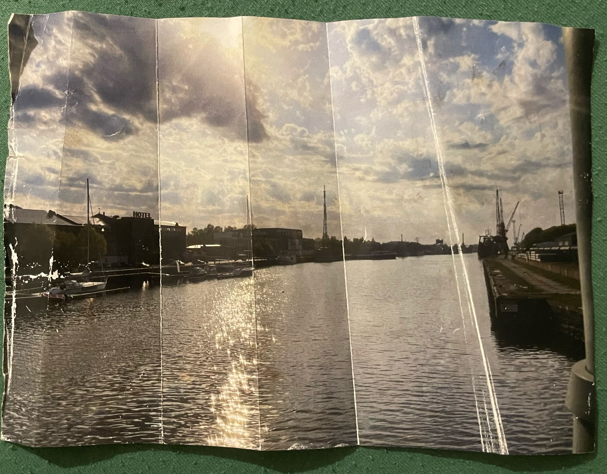
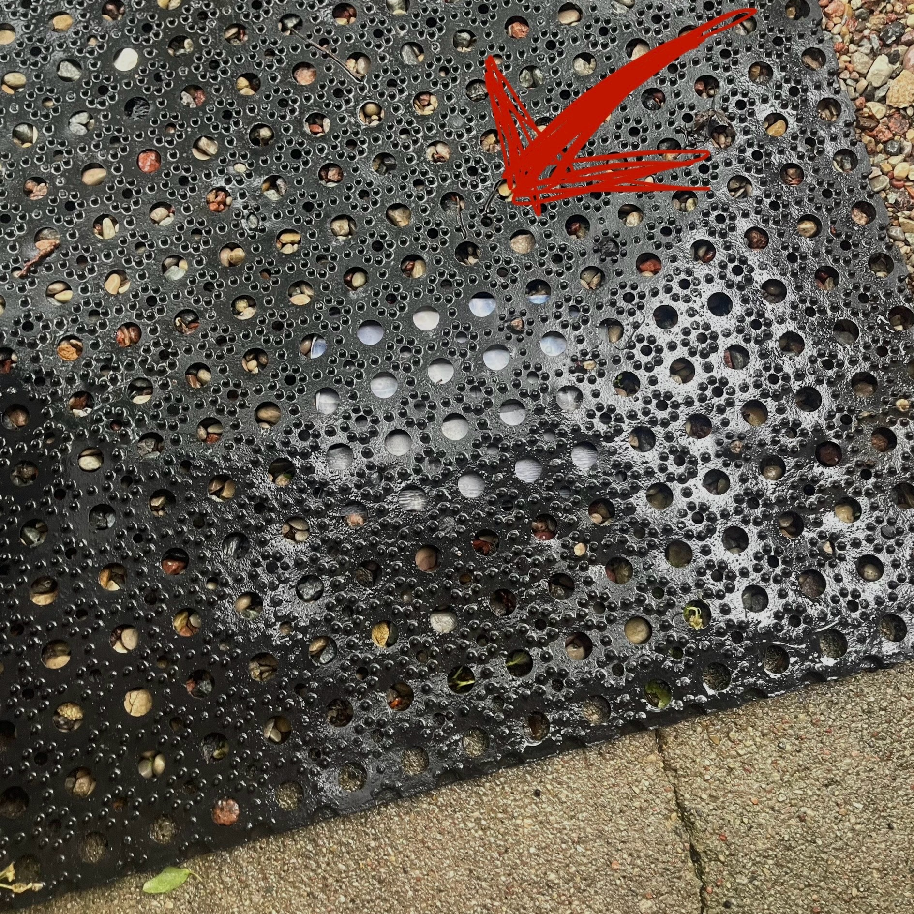
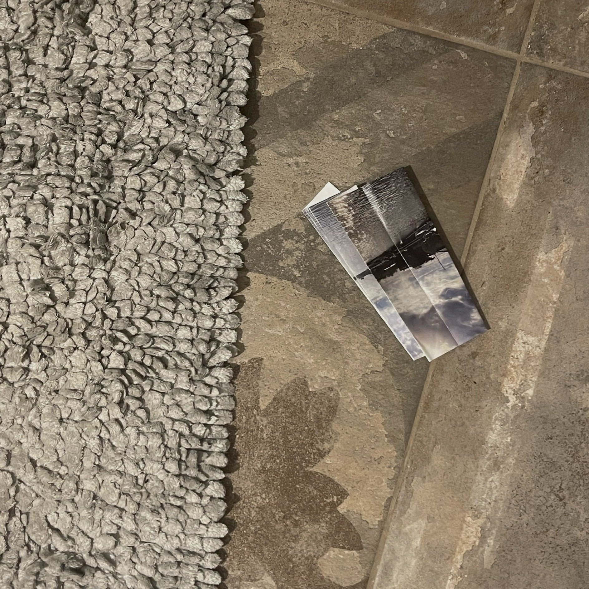

glitched version. i did it with audacity. i like this version because it feels like there's only the sky and water, no houses and no boats.
original picture

analog photo glitch

1. I placed it under my outdoor mat while it was raining

2. I placed it under the bathroom mat and found it laying like this when I returned a day later